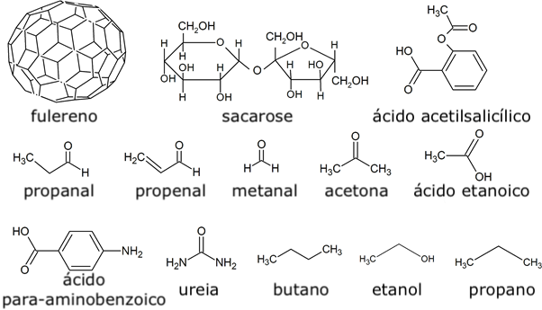
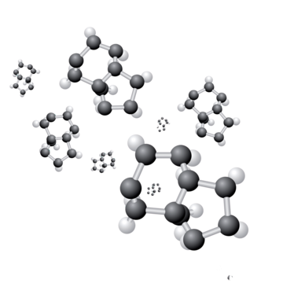

Moléculas: a base da matéria
As moléculas são conjuntos de átomos ligados entre si por ligações químicas. Elas formam tudo o que conhecemos, desde a água que bebemos até o ar que respiramos e o nosso próprio corpo.

O que são moléculas?
Uma molécula é formada quando dois ou mais átomos se unem por meio de ligações químicas. Essas ligações podem ocorrer entre átomos iguais ou diferentes.
Exemplos de moléculas
Algumas moléculas estão presentes no nosso dia a dia, como a água (H₂O), o gás carbônico (CO₂) e o oxigênio (O₂). Cada uma possui propriedades e funções específicas.

Tipos de moléculas
As moléculas podem ser simples, quando são formadas por átomos do mesmo elemento, ou compostas, quando possuem átomos de elementos diferentes.
O vídeo abaixo explica de forma clara o que são moléculas e como elas se formam.
As moléculas são fundamentais para a vida e para os processos químicos que ocorrem na natureza, na indústria e no corpo humano.
Compreender as moléculas é essencial para entender a química, a biologia e diversos fenômenos naturais que fazem parte do nosso cotidiano.